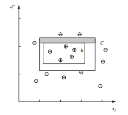

Headline: [9]Introduction to Machine Learning: (chapter two[3])
Supervised Learning: Probably Approximately Correct Learning (第二章[3])
声明: 本篇博文为本人阅读机器学习导论的读书笔记
为什么选择英文版？Why am i rewrite?
由于本人惨不忍睹的英语，于是首先选择了中文版，可是，昨天突发奇想，反正机器学习也是不会，英语也是不会，不如省事一点一起学，于是，我选择了英文版
注: 前面章节出现的词汇不会重复解释，完成本书词汇表，本书完结时提供
Supervised Learning
Probably Approximately Correct Learning
Using the tightest rectangle, S, as our hypothesis, we would like to find how many examples we need. We would like our hypothesis to be approximately correct, namely, that the error probability be bounded by some value. We also would like to be confident in our hypothesis in that we want to know that our hypothesis will be correct most of the time (if not always); so we want to be probably correct as well (by a probability we can specify).
In probably approximately correct (PAC) learning, given a class, C, and examples drawn from some unknown but fixed probability distribution, p(x), we want to find the number of examples, N, such that with probability at least 1 − δ, the hypothesis h has error at most $\epsilon$, for arbitrary:
$\epsilon$ 字段一般表示大于零的最小正值。此字段为常数。
$\delta$ 字段表示变数(变量)的变化
$δ ≤ 1/2\quad { and }\quad \epsilon > 0$:
$P{CΔh ≤ \epsilon} ≥ 1 − δ$
where CΔh is the region of difference between C and h.
Figure 2.7

Figure 2.7 The difference between h and C is the sum of four rectangular strips, one of which is shaded.
In our case, because S is the tightest possible rectangle, the error region between C and h = S is the sum of four rectangular strips (see figure 2.7). We would like to make sure that the probability of a positive example falling in here (and causing an error) is at most $\epsilon$. For any of these strips, if we can guarantee that the probability is upper bounded by $\epsilon$/4, the error is at most 4($\epsilon$/4) = $\epsilon$. Note that we count the overlaps in the corners twice, and the total actual error in this case is less than 4($\epsilon$/4). The probability that a randomly drawn example misses this strip is 1 − $\epsilon$/4. The probability that all N independent draws miss the strip is ${(1−\epsilon/4)^N}$, and the probability that all N independent draws miss any of the four strips is at most $4{(1−\epsilon/4)^N}$, which we would like to be at most δ. We have the inequality
$(1 − x) ≤ exp[−x]$
So if we choose N and δ such that we have
$4 exp[−{\epsilon}N/4] ≤ δ$
we can also write $4{(1−\epsilon/4)^N}$ ≤ δ. Dividing both sides by 4, taking (natural) log and rearranging terms, we have
$N ≥ (4/\epsilon) log(4/δ)$
Therefore, provided that we take at least (4/$\epsilon$) log(4/δ) independent examples from C and use the tightest rectangle as our hypothesis h, with confidence probability at least 1 − δ, a given point will be misclassified with error probability at most $\epsilon$. We can have arbitrary large confidence by decreasing δ and arbitrary small error by decreasing $\epsilon$, and we see in equation 2.7 that the number of examples is a slowly growing function of $1/\epsilon$ and 1/δ, linear and logarithmic, respectively.
inequation [,ɪnɪ'kweʃən] 不等式，不等方程
fixed [fɪkst] 确定的，固执的，处境…的，准备好的，修理，固定，定点，不变的
epsilon ['epsɪlɒn; ep'saɪlɒn] 希腊语字母之第五字 E
arbitrary ['ɑːbɪt(rə)rɪ] [数]任意的，武断的，专制的，随心所欲，仲裁
bound [baʊnd] 有义务的，必定的，受约束的，束缚，使跳跃，限制，弹起
region ['riːdʒ(ə)n] 地区，范围，部位，区域
draw [drɔː] 画，拉，吸引，拖，平局，抽签，绘制
draw from 从，从中提取，借鉴，请从，从…提取
guarantee [gær(ə)n'tiː] 保证，担保，保证人，保证书，抵押
bound by 邻接，接壤
overlap ['ovɚ,læp] 重叠部分，重叠，重复，时间间隔重叠，部分同时发生，搭位
divide [dɪ'vaɪd] 划分，除，分开，意见分歧，分水岭，分，定数等分，区分的
arrange [ə'reɪn(d)ʒ] 安排，排列，整理，协商，布置
rearrange [riːə'reɪn(d)ʒ] 重新排列，重新整理，重排，调整
confidence ['kɒnfɪd(ə)ns] 信心，信任，秘密，诈骗的，骗得信任的
misclassify [,mis'klæsifai] 对…进行错误的分类
decrease [dɪ'kriːs] 减少，减小，减少量，力量或者强度的减弱，指数量上的减少
logarithmic [,lɒgə'rɪðmɪk] 对数的，对数模型，对数曲线，对数方程
好了，今天的分享就到这里，我们明天继续。谢谢大家。
COMMENTS